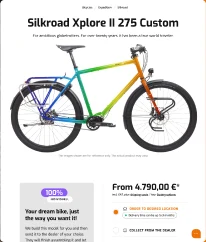
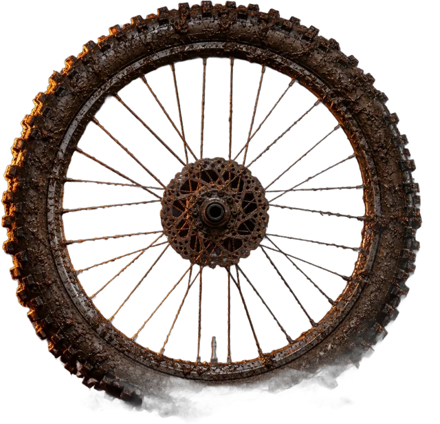
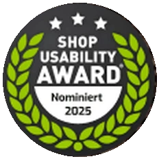
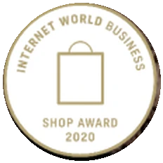

Shop Usability Award· nominiert
Shop Award 2020Ein Shop, so robust wie die Räder, die er verkauft.
Case ansehenIdee: Man sieht die echte Arbeit, nicht ein Symbolbild. Die Kachel kippt mit der Maus, die Ebenen (Startseite, Produktseite, Rad, Auszeichnungen) fächern sich auf.
Andere Cases: gleiche Mechanik, Inhalte je Projekt. Phone-Cases (Beisser, Abelmann) bekommen ein Handy statt Startseite.
Ein Shop, so robust wie die Räder, die er verkauft.
Case ansehenIdee: Jeder Case ist ein Konstruktionsblatt. Die Strichzeichnung zeigt das Produkt, die Bemaßungen zeigen, was wir gebaut haben. Beim Hover wird aus der Zeichnung das echte Produkt: vom Plan zum Shop.
Andere Cases: Wein als Flasche mit Etikett-Maßen, Keks als Querschnitt, Sofa als Aufriss. Sehr eigen, aber pro Case Zeichenarbeit.
 · Outdoor
· OutdoorEin Shop, so robust wie die Räder, die er verkauft.
Case ansehenIdee: Die Kachel erzählt den Case in drei Sekunden-Bildern wie eine Story: Marke, Arbeit, Ergebnis. Vertrautes Muster vom Handy, auf einer Agenturseite aber selten.
Andere Cases: überall dieselbe Dramaturgie, Inhalte kommen aus dem Case. Am schnellsten auf alle acht übertragbar.